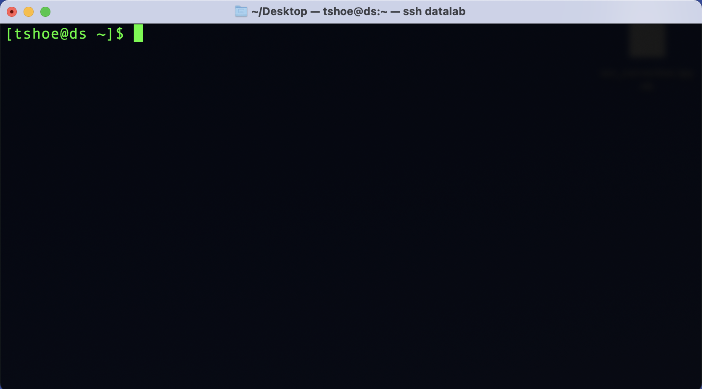
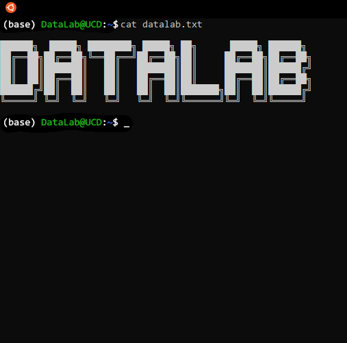
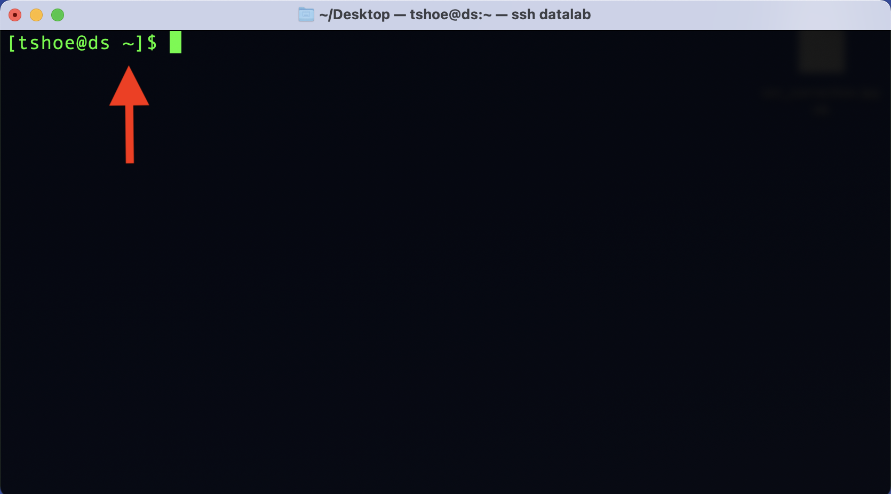

4 Command Line Basics
To use the command line, we need to launch a special program. Mac users will use a terminal application called – fittingly – “Terminal.” It ships by default on macOS.
To launch Terminal, go to:
Applications -> Utilities -> Terminal
When you launch the application, you will see something like this:

Windows users will use the Git Bash terminal. Instructions for installing this program are in the second section of this workshop reader.
To launch Git Bash, go to:
Click on the Windows Start Menu and search for “Git Bash”
Alternatively,
Click on the Windows Start Menu, select Programs, and browse to Git Bash
When you launch the application, you will see something like this:

4.1 The Anatomy of the Command Line
While the command line can look intimidating to those raised on a GUI, it’s important to know that both of the programs above are interfaces in the same way that your computer’s default windowing system is an interface. That is, even though a CLI is something of a bare bones representation of your computer, it too relies on a series of assumptions and metaphors that serve to frame how you interact with your computer. Using the CLI may feel strange at first, but part of that feeling comes from not being acclimated to the way it represents a computer.
For example, instead of pointing and clicking on things in your computer, as you’d do with a GUI, you type in your commands with a CLI. In this way, a CLI is more like a typewriter than it is a desktop (an even better analogue would be a teleprinter).
To see this, let’s return to the window that opens when you start Terminal or Ubuntu.
Everything that will happen in this window happens on a line-by-line basis. Here,
we see the command line prompt, where you’ll type your commands. The prompt
itself offers valuable information about your computer. The beginning of the line,
tshoe@ds, tells us the current user (tshoe) and current computer (ds).
This may seem redundant, but with the command line it is possible to interact
with remote computers via a network, so it can be helpful to have this
information displayed as a reference point.
The bit of information after the colon (in this example, the ~ character) tells
us where in the computer’s filesystem we are. We’ll discuss this later. For now,
just keep in mind that you can look here to find your current location. In this
case, ~ means you are in your home directory.

After the location, we see the $ character. It is an indicator that lets you
know the command line application is waiting for you to enter something. (Note
that you do not need to type this character, it will appear automatically, but
the examples below include it to emulate what you’ll see onscreen)
Depending on your system and/or command line interface, you may or may not also
see a solid or flashing box that appears after the prompt character. This is a
cursor position indicator and it tells you where the current cursor is in
the terminal. This is useful if you need to go back and correct and error.
Since you can’t click around with a mouse in a CLI, you’ll have to use your
computer’s Left and Right arrows to move the cursor to your desired location
and make any changes from there.
4.2 Interacting with the Command Line
Now we can enter some commands, which is simply a matter of typing them in after the prompt. For example:
$ echo…will print back to screen any text that you supply to the command. It literally echoes your text:
$ echo "Hello world!"
Hello world!To execute this, or any command, you simply hit the Return/Enter key on your
keyboard. You’ll see that when you execute a command, your computer’s shell
program will interpret and execute the indicated operation, print any output from
that operation to screen, and deliver a new command line prompt.
If you want to see what files and folders are in your home directory, you can
use ls (“list”):
$ ls
backups data.csv jupyter_notebook.ipynb project_folderYou can also use ls on a subfolder to show its contents:
$ ls project_folder
file_1.txt file_2.txtWant some more information about your files and folders? You can modify the base
functionality of the ls command – and in fact you can do this for many such
commands – with flags. We do this by adding a dash (-) and then a letter,
or a combination of letters, directly after the dash.
ls -lha…will print out information about the permissions, size, and date of the current directory’s contents, as well as the user(s) who created them:
$ ls -lha
.
..
.config_file
drwxrwxr-x 2 tshoe staff 4.0K Jun 21 23:30 backups
-rw-rw-r-- 1 tshoe staff 28K Oct 4 20:42 data.csv
-rw-rw-r-- 1 tshoe staff 6.2K Aug 27 22:44 jupyter_notebook.ipynb
drwxrwxr-x 8 root root 4.0K Oct 4 21:44 project_folderIt’s worth walking through this output, because it demonstrates how we can bring
important information into view with just a few keystrokes. For beginners, the
most relevant portions of ls -lha are likely to be toward the end of the output,
where the file sizes are listed along with the date each file was last modified.
To the left of this information are listings for the file owner/file group
(respectively, tshoe/staff and root/root). These listings help us make
some sense of the most confusing part of the above output: those strings of r’s,
w’s, and x’s. These represent the various permissions for each file.
Permissions are specific file attributes that control which users can read (r),
change (w), or execute (x) a file. Depending on what level of permissions
you, or the user group to which you belong, have been assigned, you may or may
not be able to work with certain files (if you’re on your personal computer,
you likely have full permissions).
Besides outputting file information, ls -lha also shows us three things in
our folder that were otherwise hidden with just ls: ., .., and
.config_file. The first two are special notation for navigating your
computer, which we’ll discuss in a later section. The last, .config_file, is
a dotfile. Dotfiles (named for the . that prefaces them) are hidden by
default on your computer. They often contain various configuration settings
that people use to customize their computers. Some will also log the history of
commands you’ve sent via a CLI (for example, .bash_history or .python_history).
We can’t discuss these files in depth, but for the moment it’s worth
recognizing that they exist and that you’ll occasionally encounter them when
working on the command lie.
Depending on your particular system and/or CLI, all of the above might look slightly different on your computer. However, the basic presentation and functionality as described above will be the same. Typing is the predominant way of using a CLI, and the results of sending in commands with a CLI are text-only representations of your computer and your files.
4.3 Command Syntax
As you can see, the syntax of commands is straightforward. Commands use a
space to delimit their different components, and flags are called with - to
modify those commands. When put together, we can generalize these components
look like so:
$ [command] [optional flags] [file, data, or other pointer on which to run the command]There is one caveat to this: because commands use spaces to delimit their
components, you can run into problems when running commands on files with spaces
in their names. Your command line interface program will interpret that file’s
spaces as separate components and an error will almost surely result. If you’re
running a command on a file with a space in its name, you’ll need to escape
that space with \.
This will throw an error:
$ [command] file name.txtThis will not:
$ [command] file\ name.txtWhile escape characters are perfectly workable, they can be a bit of a pain to type over and over. For this reason, people who use the command line in their daily work often avoid spaces altogether when naming their files. If you’re interested to learn more about what conventions you might use in place of spaces, see this section on file names in the DataLab’s workshop reader about project organization and documentation.
4.4 Common Command Line Commands (and More!)
During our hands-on workshop session we will practice using several commands, which are listed below (along with a few other supplementary ones).
| Command | Command Name | Function |
|---|---|---|
| ls | List | Lists all files in the current directory. |
| ls -l | List with Long flag | Lists additional information about each file. |
| ls -h | List with Human-Readable flag | Lists file information in a human-readable format. |
| ls -a | List with All flag | Lists all files, including hidden files. |
| file | File | Determines the type of file. |
| cat | Concatenate | Prints the contents of a file to screen. |
| pwd | Print Working Directory | Prints the current working directory. |
| mkdir | Make Directory | Creates a new file directory. |
| cd | Change Directory | Navigates to another directory on the file system. |
| mv | Move | Moves files. |
| cp | Copy | Copies files. |
| unzip | Unzip | Decompresses file archives. |
| rm | Remove/Delete | Deletes files. |
| man | Manual | Opens the manual page for another command. |
A more complete list of Unix Commands may be found on the Unix Cheat Sheet. That said, there are dozens of base commands, each with their own set of flags, and it’s possible to install software that will expand that number even more. We can’t go over everything in the workshop, but familiarizing yourself with the basic command syntax will help you find your way around new commands.
One other thing that will help you learn about new commands is man (“manual”).
This opens the manual page for another command:
$ man ls…opens:
LS(1) User Commands LS(1)
NAME
ls - list directory contents
SYNOPSIS
ls [OPTION]... [FILE]...
DESCRIPTION
List information about the FILEs (the current directory by default). Sort entries alphabetically if none of
-cftuvSUX nor --sort is specified.
Mandatory arguments to long options are mandatory for short options too.
-a, --all
do not ignore entries starting with .
-A, --almost-all
do not list implied . and ..
--author
with -l, print the author of each file
-b, --escape
print C-style escapes for nongraphic characters
--block-size=SIZE
with -l, scale sizes by SIZE when printing them; e.g., '--block-size=M'; see SIZE format below
-B, --ignore-backups
do not list implied entries ending with ~
-c with -lt: sort by, and show, ctime (time of last modification of file status information); with -l:
show ctime and sort by name; otherwise: sort by ctime, newest first
-C list entries by columns
--color[=WHEN]
colorize the output; WHEN can be 'always' (default if omitted), 'auto', or 'never'; more info below
-d, --directory
list directories themselves, not their contents
[...]As opposed to the usually mute, minimalist disposition of a CLI, here you can see
thorough documentation for a given command and its various flags. A visually
condensed version of this information is also accessible by flagging a command
with --help, as in ls --help. Sometimes it can also be helpful to know what
version of a command you’re using, as commands themselves can be updated. You
can find this information for some commands with --version, or --v:
$ man --v
man, version 1.6gStill unclear about what a command does? Look it up with your favorite search engine, or visit Stack Exchange and search there. CLIs are widely used software, and chances are incredibly good that someone else has had the same question you want to ask.
4.5 When Problems Arise
Error messages offer another, admittedly less pleasant way to learn about how a command works. When you’re first starting out with any kind of console-based software (whether it be a CLI or writing code), one of the most important skills you can learn is how to read an error message. For the most part, such messages are quite clear; they’re intended to help you debug your problem and thus attempt to supply you with information about what might be going wrong.
As an example, if you’re at your home directory, and it looks like the following:
$ ls
backups data.csv jupyter_notebook.ipynb project_folder…and you decide to ls a folder within this directory that doesn’t exist:
$ ls no_nameYou’ll see this error message:
$ ls no_name
ls: cannot access 'no_name': No such file or directoryThis tells you that, while you’ve sent in a valid ls command, it can’t find
what you’re looking for.
Likewise, forgetting a space:
$ echo"hello"…will produce:
$ echo"hello"
zsh: command not found: echohelloOr in other words, you’ve sent in a command that’s either invalid or is unavailable. These messages are both fairly clear, but if you’re ever confused, or if you simply want to find out more about an error, a search engine is once again your friend. Sometimes simply copy/pasting the error message and searching on that alone will lead directly to information about what went wrong.
That all said, sometimes you need to stop a CLI process immediately. Did you, for
example, do something that causes your computer to print a million lines on
screen? Did you decide you don’t want a file copied to a new location, and it’s
still in the midst of transferring? You can interrupt any command with
CTRL+C. This will stop whatever current process is running in your interface.
While you can stop a command, for the most part it isn’t possible to undo a command. Please take care to know exactly what you’re running and what you’re running it on, especially when it comes to modifying or deleting things on your computer.